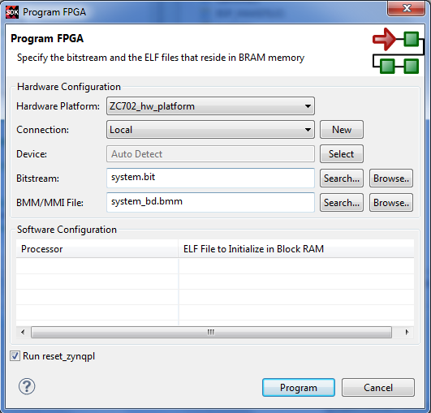

Program FPGA
Program the FPGA with the bitstream.

The table below lists the options available on the Program FPGA dialog box:
Option |
Description |
|---|---|
Hardware Configuration |
Specify the Bitstream and BMM files. These are provided by Vivado® when you export your hardware design to SDK. |
Bitstream File |
In this field, specify the FPGA Bitstream. |
BMM File |
In this field, specify the BMM file. |
Software Configuration |
Specify the program that is initialized at the reset start address for each processor in the Block RAM. |
Processor |
Name of the Processor in the System. |
ELF file |
Specify the ELF file to initialize. |
Program |
Click this button to program the FPGA. |